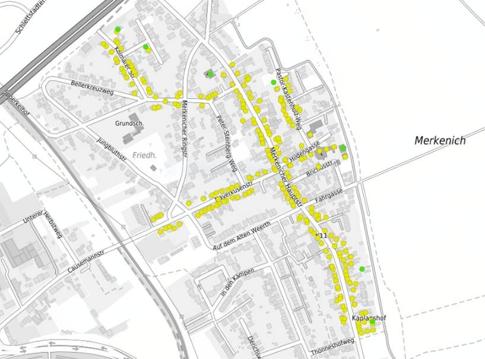

Als Verein in Merkenich wollen wir unsere Mitglieder auch über aktuelle
Themen im Ort informieren. Links zu weiterführenden Informationen werden hier gesammelt.
Schnelles Internet für Merkenich, 23.01.2022
Auch zum Thema Netzausbau in Merkenich möchte unser Verein den Bürgerverein
Merkenich unterstützen. Vieleicht können wir gemeinsam eine Verbesserung in Merkenich
erreichen.
Der Bürgerverein hat in den letzten Woche recherchiert, ob es was Neues zum Glasfaser
Ausbau gibt. Gibt es!
Wenn die Auskunft von Netcologne richtig ist , werden die Glasfaseranschlüsse umso
wahrscheinlicher, je mehr Leute sich auch tatsächlich für einen Ausbau konkret
interessieren.
Dazu ein Ausschnitt von der Website der Stadt Köln zu dem offensichtlich möglichen
Glasfaseranschluss eines großen Teils der Häuser in Merkenich:

Quelle:
Breidband-Ausbau Informatien der Stadt Koeln
Auf der Homepage von netcologne.de den Reiter „Netzausbau“ anklicken und dort in
„Ausbaugebiete“ Köln auswählen (sog. weiße Flecken). da kommen dann entsprechende Angebote
in den Ausbaugebieten Unter der Adresse https://www.netcologne.de/privatkunden/hilfe/ausbau
Die Bürger von Merkenich warten schon lange darauf, dass sie an das Glasfasernetz
angeschlossen werden. Zwar hat es schon einige
Verbesserungen gegeben, anscheinend haben alle ihren Anschluss auf den letzten
Metern über Kupferkabel. Also mit dauerhafter Leistungseinschränkung.
Aktuelle Infos über:
http://www.buergerverein-merkenich.de
Der Vorstand des TuS blickt gespannt auf die Entwicklung in diesem Thema.
Klärschlammverbrennung in Merkenich, 23.01.2022
Der Kölner Stadtrat und die Stadtentwässerungsbetriebe haben den Bau einer
Klärschlammverbrennungsanlage in Köln-Merkenich beschlossen. Der Standort der
geplanten Anlage ist unweit vom Gelände des Fußballplatzes und nahe einiger
Mehrfamilienhäuser und des Naturschutzgebietes Rheinaue Merkenich-Langel.